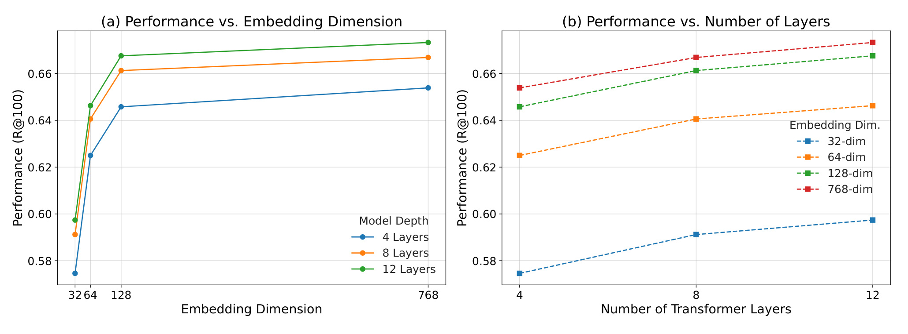
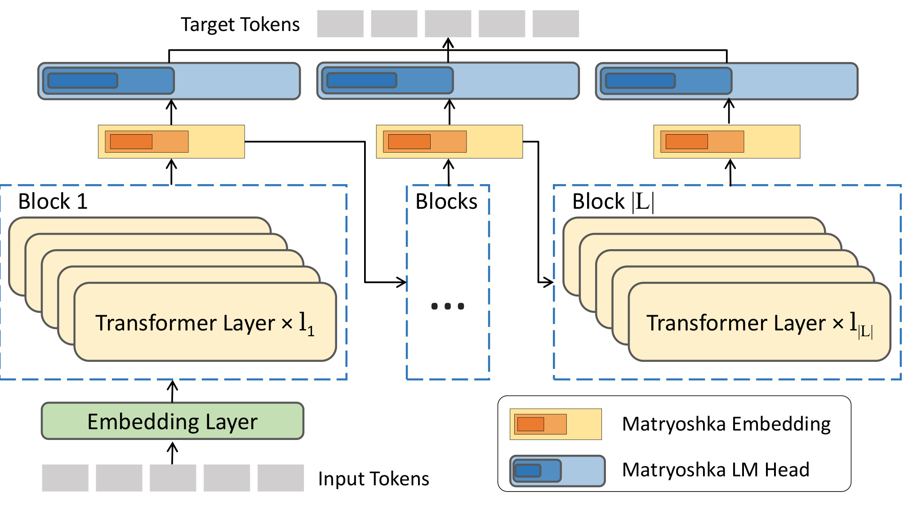
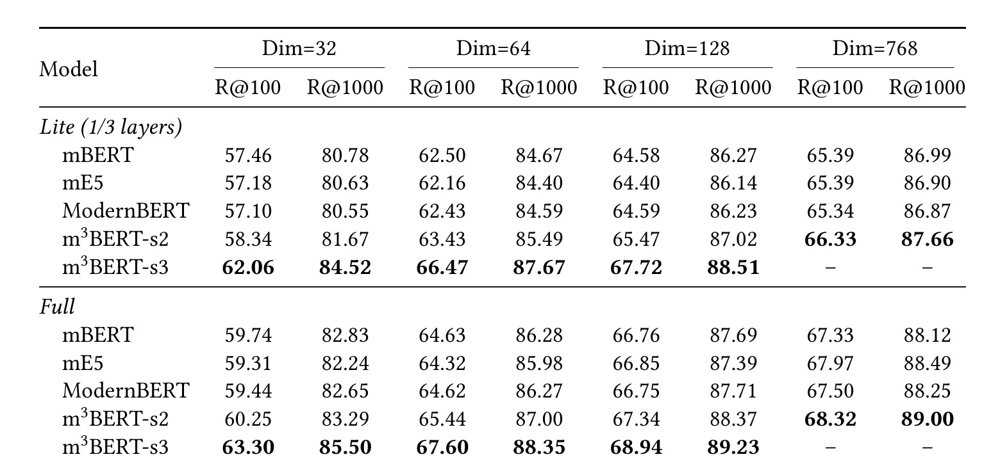
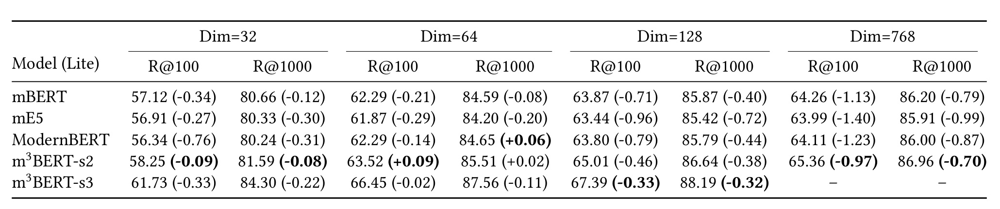

m3BERT：m3BERT: A Modern, Multi-lingual, Matryoshka Bidirectional Encoder
这里精读一篇最近公开的论文《m3BERT: A Modern, Multi-lingual, Matryoshka Bidirectional Encoder》。中文可以叫《现代多语言 Matryoshka 双向编码器》。
论文链接：https://arxiv.org/abs/2605.19568
PDF：https://arxiv.org/pdf/2605.19568
作者：Yaoxiang Wang, Simiao Zuo, Qingguo Hu, Yucheng Ding, Yeyun Gong, Jian Jiao, Jinsong Su
机构/团队：Microsoft / Xiamen University / SJTU
公开日期：2026-05-19，来源：arXiv cs.CL / KDD 2026，arXiv ID：2605.19568。
代码/项目页：未在摘要页核验到代码链接。
0. 导读
m3BERT 是今天最推荐系统工程的一篇。Embedding 模型是工业搜索、广告和推荐召回的底座，但线上部署经常遇到不同业务预算：有的链路要 32 维低延迟，有的链路能用 768 维高精度；有的场景只允许 lite model，有的可以跑 full model。传统做法是为每个预算训练或裁剪模型，容易造成预训练和下游使用不一致。m3BERT 用双轴 Matryoshka 预训练，把层数和维度都纳入统一训练目标。
这篇论文和每日关注范围的关系很直接：它不是孤立的模型技巧，而是围绕推荐、检索、RAG、Agent 或大模型服务链路里的真实约束展开。下面按问题、方法、图表、实验和工程判断展开。
1. 背景与问题
搜索广告检索需要在巨大候选空间中快速匹配 query、keyword、doc 和广告素材。Embedding 模型既要语义好，又要满足延迟、内存、索引大小和多语言需求。固定维度、固定层数的模型很难同时服务所有场景。
Matryoshka Representation Learning 的思想是让前缀维度也有语义表达能力，从而一个向量可以按不同维度截断。m3BERT 进一步把这个思想扩展到 transformer layers：不仅 embedding dimension 可裁剪，模型深度也可裁剪。
论文来自 Microsoft/Xiamen/SJTU，实验核心是 Bing-Click 工业检索数据，并结合多语言和 Web domain pretraining，说明它不是一个纯学术 embedding benchmark，而是面向生产检索系统的 foundation encoder。
更抽象地看，论文要回答的是一个资源分配问题：在模型能力、上下文信息、候选预算、延迟预算或业务约束都有限时，怎样把计算放到最有价值的位置。这个问题和推荐系统里的召回预算、排序链路、广告出价、用户长期价值建模是一类问题，只是本文落在 工业检索 场景。
2. 核心方法
m3BERT 的第一轴是 embedding dimension Matryoshka。模型在训练时同时优化 32、64、128、768 等不同维度的表示，使得低维前缀也能保持检索能力。这样可以用同一套 embedding 适配不同索引大小和延迟要求。
第二轴是 transformer layer Matryoshka。模型按不同层数抽取 lite/full 子模型，让低资源场景不必额外训练一个小模型。层数与维度组合后，系统可以选择 L4-D64、L12-D768 等不同部署点。
预训练分三阶段。Stage 1 做 monolingual pretraining，Stage 2 做 multilingual adaptation，并用平滑采样缓解高资源语言支配；Stage 3 面向广告和 Web search，用 10B query-document click pairs 做 in-domain contrastive pretraining。
Stage 3 使用 Inf-CL 处理大 batch 对比学习，避免完整相似度矩阵显存爆炸。这个选择对工业检索关键，因为点击日志规模巨大，小 batch 的负样本质量和训练稳定性都有限。
我在阅读时更关注模块之间的接口，而不只是模块名称。本文的共同特点是：把原本隐含在工程经验里的决策变量显式化，例如阈值、预算、缓存、维度、控制信号或刷新间隔。显式化之后，系统才有可能被校准、复现、迁移和线上监控。
3. 图表解读

图 1 展示随着 embedding 维度和 transformer 层数增加，Recall@100 的收益递减。它是全文动机图：更大并不总是更划算，所以需要一个能在精度和资源之间连续取点的模型。

图 2 展示 matryoshka model structure。输入 token 经过多个 layer block，训练时同时对不同层数和不同维度的 embedding/LM head 优化。这个图说明 m3BERT 不是简单截断，而是在预训练目标里显式让所有子配置可用。

表 1 是 Bing-Click 主结果，按 lite/full 和 32/64/128/768 维度展示 Recall@100/1000。m3BERT-s2/s3 在多数配置上超过 mBERT、mE5 等 baseline，尤其 Stage 3 Web 域预训练带来明显检索收益。

表 3 展示 Matryoshka SFT 对 lite 模型的影响。它回答了一个重要工程问题：低层数、低维度模型是否只是勉强可用，还是经过 Matryoshka 训练后也能保持竞争力。
4. 实验与结果
论文在 Bing-Click 大规模工业检索测试集上评估 Recall@100 和 Recall@1000，并补充 MS MARCO、Natural Questions、TREC-COVID 等公开检索数据。主结果显示 m3BERT 框架在 full/lite、低维/高维配置下均有稳定优势；Stage 3 的 Web domain pretraining 尤其提升商业检索效果。表 4/5 还做了架构消融和 Matryoshka distillation 分析。
这些结果的边界也要看清。论文报告的指标主要证明当前问题定义下的方法有效，但并不等价于所有生产链路都会得到同等收益。尤其是推理系统论文要区分 decoding time、end-to-end latency 和服务端吞吐；RAG/Agent 论文要区分 benchmark score、真实用户满意度和长期维护成本；工业推荐/平台论文要区分离线回放、短期 A/B 和长期生态影响。
5. 我的理解
我认为 m3BERT 的核心价值不只是“又一个 embedding 模型”，而是把部署预算作为预训练目标的一部分。推荐系统里我们常常在离线训练时追求一个最大模型，然后在线再量化、裁剪、蒸馏；这会造成训练目标和使用方式不一致。m3BERT 反过来在预训练阶段就告诉模型：你未来会被不同层数、不同维度使用。这个思想对多端推荐、广告召回、端侧个性化 embedding 都很有价值。
从研究脉络看，这类工作共同说明一个趋势：大模型和推荐系统都在从“单模型效果”走向“系统级可控”。以前我们常把模型能力看成主要变量，现在越来越多论文开始处理部署预算、缓存策略、风险校准、候选预算、跨城市迁移、长期状态记忆等问题。这些问题不一定在排行榜上最耀眼，却更接近真实业务系统里的主要瓶颈。
6. 工程启发与复现建议
复现可从公开 multilingual BERT/E5 开始，先只做 embedding dimension Matryoshka，再扩到 layer-depth Matryoshka。若没有 10B 点击对，可用搜索日志或公开 query-doc pair 做小规模验证。评估要同时报告 Recall、向量维度、索引大小、QPS 和 P99 延迟；否则只看 Recall 无法体现 m3BERT 的部署价值。线上选型可以把每个候选配置放进 cost-quality frontier，按业务链路选择 L/D 组合。
如果要把这篇论文纳入自己的技术栈，我建议先做最小闭环，而不是一次性复现全部实验。先找到一个可观测的瓶颈指标，再实现论文中最核心的决策变量，最后用分桶指标看收益是否来自目标机制。只有当收益在关键分桶上成立，才值得继续投入完整系统实现。
7. 局限与风险
- Bing-Click 是内部工业数据，外部很难完全复现，公开 benchmark 只能部分验证。
- 双轴配置空间很大，线上如何自动选择层数和维度仍需要策略。
- 低维 embedding 可能对长尾 query、低资源语言或冷启动广告损失更大，需要分组评估。
- Stage 3 依赖大规模点击日志，存在曝光偏差、位置偏差和广告商业目标偏差。
- Matryoshka 子模型共享参数，某些低预算配置的优化可能和高预算配置互相牵制。
8. 后续跟进
- 跟踪 KDD 2026 版本是否释放更多实验和代码。
- 把双轴 Matryoshka 用到商品/内容召回 embedding，测试索引体积下降。
- 对低资源语言和长尾 query 单独评估，避免平均 Recall 掩盖问题。
- 研究如何用线上 A/B 自动选择 layer-dim 部署点。
9. 精读补充：资源感知 Embedding 的复现重点
m3BERT 最值得复现的不是完整 10B query-document 预训练，而是双轴 Matryoshka 目标。一个小规模实验可以先选公开检索数据，训练同一个 encoder 同时支持 32、64、128、768 维输出，并比较它和分别训练四个模型的差异。若低维前缀在 Recall 上显著优于标准模型截断，就说明维度 Matryoshka 起作用。下一步再引入 layer-depth 截断，比较 L4、L8、L12 子模型是否能共享预训练收益。
线上部署时，m3BERT 的关键指标不只是 Recall@100。低维向量会减少 ANN 索引体积、内存带宽和向量距离计算成本；低层数模型会降低在线编码延迟。应该把每个 (layer, dim) 配置画成 cost-quality frontier：横轴可以是 P99 latency 或每百万 query 成本，纵轴是 Recall、CTR proxy 或 downstream GMV proxy。这样业务方才能按链路选择配置，而不是默认使用最大模型。
点击日志预训练的风险也不能忽略。Stage 3 使用一个月 10B query-document click pairs，能强化商业检索能力，但点击数据带有曝光偏差、位置偏差、广告主预算偏差和历史排序策略偏差。如果不做 debias 或分桶评估，模型可能更擅长复现历史系统，而不是发现新广告、新商品或长尾内容。迁移到推荐系统时，应特别看冷启动 item、低曝光 query、低资源语言和新行业广告的表现。
另一个值得关注的是多语言采样。论文用平滑因子缓解高资源语言压制，但真实业务通常不是平均服务所有语言，而是有地区、收入、合规和生态差异。Matryoshka 低维配置可能对低资源语言损失更大，因为前缀维度首先承载高频语言的语义。复现时建议每个维度都按语言分组报告 Recall，而不是只看全局平均。
10. 失败案例与监控指标补充
m3BERT 的风险主要来自“平均检索效果掩盖部署分桶”。低维向量在总体 Recall 上可能接近高维，但对长尾 query、冷启动广告、多语言混合 query、低曝光行业词的损失更大。如果线上只按总体 Recall 选择 32 维或 lite 模型，可能会让高频商业 query 受益，却牺牲新广告和小语种体验。因此评估时必须按 query 频次、语言、行业、广告主规模、历史曝光量和内容新鲜度分桶。每个 (layer, dim) 配置都应输出一张分桶损失表，而不是只给一个全局均值。
另一个关键监控是索引生命周期。低维 embedding 降低索引成本，但若模型频繁更新，重建 ANN 索引的成本、双写灰度和向量版本兼容也会影响真实收益。Matryoshka 模型的好处是同一向量可以截断出多种维度，但线上仍要决定存储全量向量还是只存目标维度。如果存全量，索引体积未必下降；如果只存低维，后续想升级高维需要重算。推荐系统工程中，这类模型不能只和训练团队讨论，还要和检索引擎、索引更新、AB 平台和成本核算一起设计。
11. 复现实验口径补充
若要在推荐系统中使用 m3BERT 思路，建议同时准备离线召回实验和线上近似成本实验。离线部分看 Recall@K、NDCG、长尾 item 覆盖、新 item 命中；成本部分看 embedding 计算延迟、ANN 查询延迟、索引内存、更新吞吐和重建时间。Matryoshka 的真正价值是让同一训练体系产出多个部署点，因此评估表最好按配置列出 L4-D32、L4-D64、L8-D128、L12-D768 等组合。只有当这些组合形成平滑 frontier，业务方才能自由选择预算，而不是在几个孤立模型之间切换。
还要验证跨任务共享是否真的成立。广告 query-keyword matching、自然搜索 query-doc matching、推荐 item-item matching 虽然都叫 embedding，但负样本结构和业务目标不同。m3BERT 在 Bing-Click 上有效，不代表直接迁移到商品推荐就最优。更稳的做法是把 m3BERT 作为初始化，再做任务内 Matryoshka SFT，并在不同维度上检查是否出现任务间干扰。